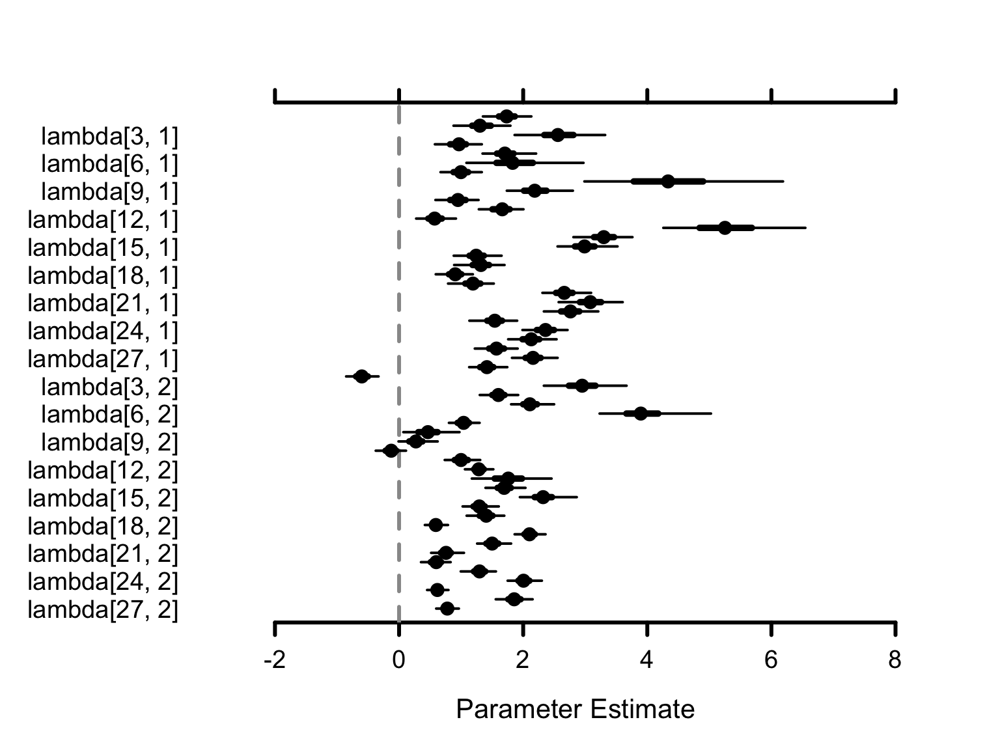

Beginner Tutorial: Introduction to Bayesian Modeling with PGDCM
Introduction
This tutorial is designed as an introductory resource for researchers and practitioners seeking a quick, practical guide to probabilistic programming and Bayesian psychometric modeling through pgdcm.
Learning Objectives:
By the end of this tutorial, you will learn how to:
- Prepare your item response data and Q-Matrix (evidence model) for analysis with the
pgdcmpackage.- Link your formatted data to the underlying graphical network required for the model.
- Execute a Bayesian MCMC sampler without writing complex, manual configuration code.
- Extract and interpret the resulting posterior distributions and convergence diagnostics.
1. Environment Requirements
Before calling any functions from pgdcm, make sure you have loaded the nimble package. The nimble package functions as the core probabilistic programming and MCMC estimation engine for pgdcm, so it is critical to load it before loading our package.
We will also load dcmdata, which contains standard cognitive datasets for us to test our models on. For this tutorial, we will use the DTMR dataset. You can learn more about the dataset here: https://dcmdata.r-dcm.org/reference/dtmr.html
2. Preparing the Data and the Evidence Model
Diagnostic Classification Models (DCMs) evaluate whether participants have mastered the specific skills an assessment is designed to measure. To estimate this, the model requires two key components:
-
Observational Data (
X): The actual test responses from participants, typically consisting of 1s (correct) and 0s (incorrect). This forms an matrix, where is the number of participants and is the number of questions (items). -
The Q-Matrix (
Q): An evidence model specifying which exact skills are required to answer each question correctly. This forms a matrix, where is the number of questions and is the number of skills (attributes). Specifically, an entry of 1 in the -th row and -th column indicates that the -th skill is required to answer the -th question, while a 0 indicates it is not.
Let’s load our sample dataset and Q-Matrix:
X <- dtmr_data
Q <- dtmr_qmatrixIt is always good practice to verify the dimensions and inspect a few rows to make sure everything loaded correctly:
The pgdcm package mathematically treats modern psychometric models as probabilistic graphical models (specifically, Directed Acyclic Graphs or Bayesian Networks). Because of this, we must first convert our standard Q-Matrix into a Directed Acyclic Graph (g) that represents the underlying node dependencies-i.e., the dependencies between the skills and the tasks/test items. The QMatrix2iGraph() function handles this graphical conversion automatically for us.
Alternative: Using Nodes and Edges Files
If you prefer not to use a Q-Matrix,
pgdcmallows you to construct the graph directly from CSV files defining the nodes and edges of your network. You can do this using thebuild_from_node_edge_files("nodes.csv", "edges.csv")function instead ofQMatrix2iGraph(). This is particularly useful for modeling more complex structures like attributes hierarchies or prerequisites.
Once we have constructed the core network graph, several model parameters must be defined to establish the active modeling environment for NIMBLE. This includes validating topological constraints, isolating constants required for nimble inference calculations, and setting initial values for the model parameters. The build_model_config() function handles all of this heavy lifting.
# Restructure Matrix to an iGraph object
g <- QMatrix2iGraph(Q)
# Link student responses to the Graph
config <- build_model_config(g, X)It is important to note that by default, QMatrix2iGraph() assigns a DINA (Deterministic Input, Noisy “And” gate) compute type to all nodes. This implies a strict, non-compensatory cognitive framework-meaning a student must possess all required skills dictated by the Q-Matrix to likely answer an item correctly; mastering just one or a few required skills provides no additional benefit. If your assessment follows a different theoretical framework, you can specify this at graph construction time by supplying the compute argument to QMatrix2iGraph():
# Example: use a compensatory framework instead
g <- QMatrix2iGraph(Q, compute = "dino")-
compute = "dino"(Deterministic Input, Noisy “Or” gate): Assumes a fully compensatory framework. Here, possessing at least one of the required skills is sufficient to likely answer the item correctly. -
compute = "dinm"(Deterministic Input, Noisy “Mixed”): Assumes a proportional or additive framework. In this model, each additional required skill a student masters incrementally increases their probability of answering correctly.
The downstream build_model_config() function reads the compute type directly from the graph’s node attributes, so there is no need to specify it again at the configuration stage.
3. Estimation Pipeline
In a traditional Bayesian workflow, setting up the configuration for both the model and the MCMC sampler requires a non-trivial amount of code. To keep the process streamlined and robust, the run_pgdcm_auto() function automates this step. It initializes the model with sensible default values, runs the MCMC sampler for you, and saves the results directly to your working directory.
Note: MCMC algorithms construct a Markov chain to recursively explore the unknown probability distributions of our parameters. Evaluating these complex prior-likelihood constraints across thousands of iterations is computationally intensive and can realistically slow down documentation rendering. Therefore, it is standard workflow practice to execute and save your chain results to disk via saveRDS() locally, and load them for post-model fitting inference or analysis.
results <- run_pgdcm_auto(
config = config,
prefix = "DINA_DTMR" # You can give any name here. This prefix is used while saving
# the prior predictive and posterior predictive simulation results.
)
# Save the exact results to an RDS file to bypass future recomputation
saveRDS(results, "Beginner_Tutorial_Results.rds")What’s happening under the hood of run_pgdcm_auto?
Under the hood,
run_pgdcm_auto()handles several complex configurations so you don’t have to manually code them. The function configures the MCMC algorithmic engine with the following default parameters:
niter = 1000: The total number of MCMC samples to draw per chain.nburnin = 100: The number of initial samples to discard. MCMC algorithms take time to traverse towards the high-probability region; discarding early “burn-in” samples ensures we only analyze parameters after they have reached a stable state.chains = 2: The algorithm runs two independent sampling processes simultaneously to ensure they both converge onto the same distribution.Additionally, standard comprehensive workflows evaluate the viability of a model using simulation. While
run_pgdcm_autohas arguments (prior_sims = NULL,post_sims = NULL) that bypass this by default for speed, they are critical components of a full Bayesian workflow:
- Prior Predictive Checking: Before seeing the actual data, what kind of data does the model think it will see based purely on our initial parameter bounds (priors)? This ensures our initial limits are logical and not mathematically impossible.
- Posterior Predictive Checking: After the network learns the distribution, we simulate student response patterns utilizing the trained distributions. We then compare these simulated response patterns against the real observational data. If the model accurately captured the underlying psychometric properties, the simulated data should closely resemble the real data.
4. Interpreting the Results
The results object returned by run_pgdcm_auto() includes several pre-computed, beginner-friendly outputs. Let’s start with the two most useful: skill profiles and item parameters.
Who Mastered What? (Skill Profiles)
The skill_profiles table is an matrix showing the estimated probability of mastery for each student on each skill. Values close to 1 indicate likely mastery; values close to 0 indicate likely non-mastery.
# Each row = one student, each column = one skill
head(results$skill_profiles) referent_units partitioning_iterating appropriateness
000809 9.999444e-01 0.9986111 0.79872222
000994 2.627778e-02 0.9671111 0.88455556
002427 9.333333e-03 0.9618889 0.88227778
003128 9.999444e-01 0.9923333 0.74172222
006198 5.555556e-05 0.9937222 0.01722222
008702 5.328333e-01 0.9921667 0.97222222
multiplicative_comparison
000809 0.9997778
000994 0.9883889
002427 0.9872222
003128 0.9995556
006198 0.9758333
008702 0.4034444How Did the Items Perform? (Item Parameters)
The item_parameters table provides a clean summary of how each test item functioned, with human-readable labels instead of raw parameter indices:
head(results$item_parameters) item difficulty_mean difficulty_SD difficulty_Rhat discrimination_mean
1 1 1.4077711 0.1535871 1.02 1.7290810
2 2 -0.5853984 0.1286397 1.01 1.3389519
3 3 2.9015853 0.2920419 1.01 2.5052113
4 4 1.5771029 0.1491429 1.01 0.9337544
5 5 2.1237524 0.1878747 1.01 1.7335323
6 6 4.0207219 0.4005289 1.02 1.9544232
discrimination_SD discrimination_Rhat
1 0.1923772 1.03
2 0.2152481 1.05
3 0.3164820 1.01
4 0.1911755 1.01
5 0.2215849 1.01
6 0.4345682 1.02Each item has two key properties:
- Discrimination (Slope): How effectively the item distinguishes between students who possess the required skills and those who do not. Higher values mean better differentiation.
- Difficulty (Intercept): The baseline difficulty of the item. Higher values mean the question is harder overall.
Model Fit (WAIC)
The Watanabe-Akaike Information Criterion (WAIC) provides a single number summarizing how well the model fits the data. Lower values indicate better fit. This is especially useful if you want to compare models (e.g., DINA vs. DINO) later on.
results$WAIC[1] 29474.06Grouping Students by Mastery Patterns (Optional)
If you want to classify students into discrete latent classes based on their mastery profiles, you can pass return_groups = TRUE to run_pgdcm_auto():
results <- run_pgdcm_auto(
config = config,
prefix = "DINA_DTMR",
return_groups = TRUE
)This adds a group_patterns field to the results, which organizes students into exhaustive mastery pattern groups (e.g., all students who mastered skills 1 and 3 but not 2 and 4). By default, a probability threshold of 0.5 is used to classify mastery - you can adjust this with the threshold argument.
Warning
The number of possible mastery patterns grows as where is the number of skills. For models with many attributes, this can produce a very large number of groups.
Auto-Saved Output Files
run_pgdcm_auto()automatically saves several CSV files to your working directory using theprefixyou specified:
DINA_DTMR_skill_profiles.csv- Mastery probabilities for every student.DINA_DTMR_item_parameters.csv- Item discrimination and difficulty estimates.DINA_DTMR_mapped_parameters.csv- Full parameter summary with human-readable names.You can open these directly in Excel or any spreadsheet tool for further analysis.
Diagnostic Inferences
The results object also contains all the information needed to generate comprehensive diagnostic inferences about your test’s structural and item-level performance. You can extract these summaries using two high-level functions:
# Generate summary metrics for all test items (e.g., True Mastery, Slip, and Guessing probabilities)
item_diagnostics <- generate_item_diagnostics(results)
head(item_diagnostics) Item Guessing_Mean Guessing_CI_Lower Guessing_CI_Upper Slip_Mean
1 1 0.19770940 0.151554119 0.24682550 0.4205730
2 2 0.64177343 0.580631792 0.69762363 0.1284566
3 3 0.05392248 0.028243915 0.08473648 0.5975875
4 4 0.17223737 0.131455623 0.21439683 0.6551670
5 5 0.10811837 0.075211988 0.14388100 0.5960940
6 6 0.01895034 0.007574128 0.03510981 0.8868185
Slip_CI_Lower Slip_CI_Upper TrueMastery_Mean TrueMastery_CI_Lower
1 0.36917861 0.4698650 0.5794270 0.5301350
2 0.09380757 0.1643251 0.8715434 0.8356749
3 0.54997028 0.6438365 0.4024125 0.3561635
4 0.60986378 0.6982315 0.3448330 0.3017685
5 0.54678911 0.6431963 0.4039060 0.3568037
6 0.85741563 0.9128643 0.1131815 0.0871357
TrueMastery_CI_Upper Discrimination_Index_Mean Discrimination_CI_Lower
1 0.6308214 0.3817176 0.30800792
2 0.9061924 0.2297700 0.16001146
3 0.4500297 0.3484900 0.29155086
4 0.3901362 0.1725956 0.10964309
5 0.4532109 0.2957876 0.23436290
6 0.1425844 0.0942312 0.06260998
Discrimination_CI_Upper
1 0.4522043
2 0.2996170
3 0.4052518
4 0.2383789
5 0.3569461
6 0.1265188
# Generate summary metrics for all skills (e.g., Prerequisite Bottlenecks and Leap probabilities)
skill_diagnostics <- generate_skill_diagnostics(results)
head(skill_diagnostics) Skill Type Is_Continuous BaseRate_Mean
1 referent_units Root FALSE 0.4451870
2 partitioning_iterating Root FALSE 0.4615353
3 appropriateness Root FALSE 0.3825029
4 multiplicative_comparison Root FALSE 0.2887606
Prob_Given_All_Prereqs_Mean Prob_Given_No_Prereqs_Mean GateStrength_Mean
1 NA NA NA
2 NA NA NA
3 NA NA NA
4 NA NA NA
GateStrength_CI_Lower GateStrength_CI_Upper
1 NA NA
2 NA NA
3 NA NA
4 NA NAThese functions compute exact posterior probabilities directly from your MCMC traces, allowing you to easily evaluate the quality of your assessment and the underlying learning progression. For a deeper dive into these metrics and what they mean, see the Diagnostic Queries Tutorial.
Going Deeper: Raw MCMC Diagnostics
The outputs above are derived from the underlying Bayesian posterior distribution. If you want to inspect the raw MCMC chains directly - for example, to check convergence or visualize credible intervals - the MCMCvis package is a great tool for this.
The lambda parameters capture the raw item properties. For each test item , lambda[j, 1] is the discrimination (slope) and lambda[j, 2] is the difficulty (intercept).
# Retrieve a numerical summary table specifically for the 'lambda' item parameters
res <- MCMCsummary(results$samples, params = "lambda")
head(res) # only a few rows from res are displayed here. mean sd 2.5% 50% 97.5% Rhat n.eff
lambda[1, 1] 1.7290810 0.1923772 1.3537706 1.7274241 2.109067 1.03 512
lambda[2, 1] 1.3389519 0.2152481 0.9292727 1.3358068 1.767134 1.05 934
lambda[3, 1] 2.5052113 0.3164820 1.9328485 2.4877870 3.193183 1.01 179
lambda[4, 1] 0.9337544 0.1911755 0.5769390 0.9329804 1.328390 1.01 572
lambda[5, 1] 1.7335323 0.2215849 1.3186263 1.7288180 2.188279 1.01 369
lambda[6, 1] 1.9544232 0.4345682 1.1549475 1.9382027 2.856814 1.02 239How to Read the Table:
-
mean: The expected value (best estimate) for the parameter. -
2.5%and97.5%: The 95% Credible Interval - there is a 95% probability the true value falls within this range. -
Rhat: A convergence diagnostic (Gelman-Rubin statistic). Values greater than 1.1 suggest the chains have not yet converged and you may need to increaseniter.
MCMC visualization functions like MCMCplot() can transform these into intuitive “Caterpillar Plots”:
# Visually plot the 'lambda' parameter distributions
MCMCplot(results$samples, params = "lambda")
How to Interpret the Visuals: Each dot represents the mean estimate. The horizontal lines show the 95% Credible Interval - wider lines mean more uncertainty, narrower lines mean higher confidence.
Next Steps
- Build your own models? The Model Specification Tutorial walks you through constructing custom competency and evidence models using Cytoscape.
- Fine-tune the engine? The Advanced Tutorial covers customizing priors, MCMC sampling, and diagnostic workflows.
- Score new examinees? The Scoring Cookbook demonstrates operational calibration-and-scoring pipelines with cross-validation.